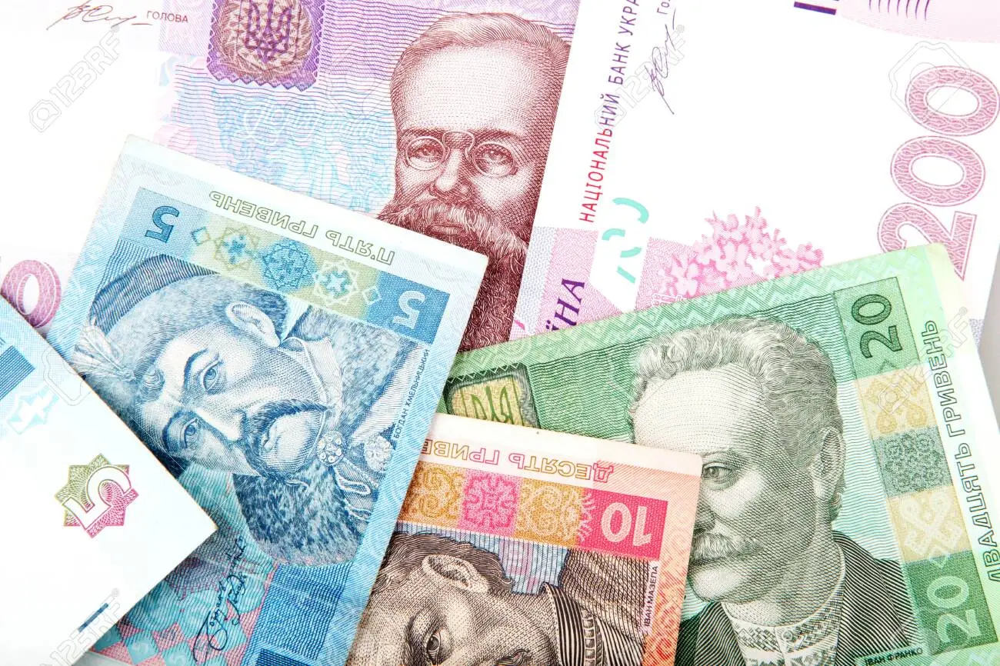

In spring 2021, Russia began building up troop strengths along its border with Ukraine. On 22 February 2022,
Russian President Vladimir Putin ordered military forces to enter the breakaway Ukrainian republics of Donetsk and Luhansk,
calling the act a "peacekeeping mission". Putin also officially recognized Donetsk and Luhansk as sovereign states, fully independent from the Ukrainian government.
In the early hours of 24 February 2022, Putin announced a "special military operation" to "demilitarize and de-Nazify" Ukraine,
and launched a large-scale invasion of the country. Later in the day, the Ukrainian government announced that Russia had taken control of Chernobyl.
Ukraine asked for immediate admission to the European Union on 28 February 2022 in response to the invasion. Click here for the latest news.
GEOGRAPHY
Ukraine is the second-largest European country, after Russia. Ukraine covers an area of 603,628 square kilometres, with a coastline of 2,782 kilometres.
The landscape of Ukraine consists mostly of fertile plains (or steppes) and plateaus, crossed by rivers such as the Dnieper (Dnipro), Seversky Donets,
Dniester and the Southern Bug as they flow south into the Black Sea and the smaller Sea of Azov.
To the southwest, the delta of the Danube forms the border with Romania.
Ukraine's various regions have diverse geographic features ranging from the highlands to the lowlands.
The country's only mountains are the Carpathian Mountains in the west, of which the highest is Hoverla at 2,061 metres,
and the Crimean Mountains, in the extreme south along the coast. Click here for more info.
CURRENCY & DEMOGRAPHICS
The hryvnia, hryvna, or sometimes gryvnya. Ukrainian: гривня , has been the national currency of Ukraine since 2 September 1996.
The hryvnia is subdivided into 100 kopiyok. It is named after a measure of weight used in medieval Kyivan Rus'.

Before the 2022 Russian invasion of Ukraine the country had over 41 million people, and was the eighth-most populous country in Europe. It is a heavily urbanized country,
and its industrial regions in the east and southeast are the most densely populated—about 67% of its total population lives in urban areas.
The overall life expectancy in the country at birth was 73 years (68 years for males and 77.8 years for females).